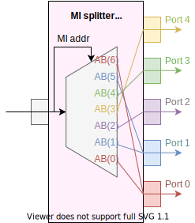

MI Splitter Plus Gen
- ENTITY MI_SPLITTER_PLUS_GEN IS
This is another splitter for the MI bus. MI transactions are routed out of a certain port, depending on how the splitter is set and on the transaction’s address.
The most significant advantage of this splitter is the possibility for the user to choose the number of output ports, and for each output port a range (or ranges) of addresses that are routed to (and out of) this port. These address ranges are specified by Address Bases (ABs), which are contained in generic ADDR_BASE.
There can be more ABs than there is output ports, which means that more than one AB can be assigned to a single output port. It doesn’t work the other way around though.
Generics
PortsGeneric
Type
Default
Description
ADDR_WIDTH
integer
32
Width of MI address.
DATA_WIDTH
integer
32
Width of MI data.
META_WIDTH
integer
2
Width of MI meta.
PORTS
integer
8
Number of output ports.
PIPE_OUT
b_array_t(PORTS-1 downto 0)
(others => true)
Output pipeline.
PIPE_TYPE
string
“SHREG”
Output pipelines type (see entity of PIPE).
PIPE_OUTREG
boolean
false
Output pipelines output register enable. Only for PIPE_TYPE = “SHREG”!
ADDR_BASES
integer
PORTS
Number of considered address bases (might be higher or equal to PORTS).
ADDR_BASE
slv_array_t(ADDR_BASES-1 downto 0)(ADDR_WIDTH-1 downto 0)
init_addr_base_downto(ADDR_BASES, ADDR_WIDTH)
Bases of address spaces (base 0 is 0x00000000). Default: Random Bases. CAUTION: ModelSim doesn’t likes directly specified value for slv_array_t generics. Assign predefined constant to this generic.
ADDR_MASK
std_logic_vector(ADDR_WIDTH-1 downto 0)
init_addr_mask_downto(ADDR_BASE, ADDR_WIDTH)
Bits of address that are needed to determine output port. The chain of ‘1’s must be continuous -> no ‘0’s in-between! Default: OR combination of all Address Bases with any ‘0’s between the ‘1’s replaced by ‘1’s.
PORT_MAPPING
i_array_t(ADDR_BASES-1 downto 0)
init_port_mapping_downto(ADDR_BASES, PORTS)
How Address Bases are mapped to ports. Constains target port index for each Address Base. Multiple Address Bases might target the same port. Default: Each Address Base is mapped to the Port on the same index (expects ADDR_BASES = PORTS).
DEVICE
string
“STRATIX10”
Target FPGA.
Port
Type
Mode
Description
=====
Clock and Reset
=====
=====
CLK
std_logic
in
RESET
std_logic
in
=====
Input MI interface
=====
=====
RX_DWR
std_logic_vector(DATA_WIDTH-1 downto 0)
in
RX_MWR
std_logic_vector(META_WIDTH-1 downto 0)
in
RX_ADDR
std_logic_vector(ADDR_WIDTH-1 downto 0)
in
RX_BE
std_logic_vector(DATA_WIDTH/8-1 downto 0)
in
RX_RD
std_logic
in
RX_WR
std_logic
in
RX_ARDY
std_logic
out
RX_DRD
std_logic_vector(DATA_WIDTH-1 downto 0)
out
RX_DRDY
std_logic
out
=====
Output MI interfaces
=====
=====
TX_DWR
slv_array_t (PORTS-1 downto 0)(DATA_WIDTH-1 downto 0)
out
TX_MWR
slv_array_t (PORTS-1 downto 0)(META_WIDTH-1 downto 0)
out
TX_ADDR
slv_array_t (PORTS-1 downto 0)(ADDR_WIDTH-1 downto 0)
out
TX_BE
slv_array_t (PORTS-1 downto 0)(DATA_WIDTH/8-1 downto 0)
out
TX_RD
std_logic_vector(PORTS-1 downto 0)
out
TX_WR
std_logic_vector(PORTS-1 downto 0)
out
TX_ARDY
std_logic_vector(PORTS-1 downto 0)
in
TX_DRD
slv_array_t (PORTS-1 downto 0)(DATA_WIDTH-1 downto 0)
in
TX_DRDY
std_logic_vector(PORTS-1 downto 0)
in
Architecture
The splitter accepts standard MI transactions at its input. Output ports have a range(s) of addresses assigned and transactions addressed to this range are sent out of the according port. As was said before, the address ranges are defined by ABs. An AB is actually just an address specifying the start of the address range. The end of the address range is specified by the next AB - 1 address. This means that the address ranges follow up on each other - there aren’t any addresses that do not belong to an address range and therefore to a port. In theory, if we wanted some addresses or address ranges not to be used, we could all map them to one port and then not connect it to anything.
The most common use case is that ABs are mapped one-on-one to ports (default PORT_MAPPING), which is also the case shown in the figure below. Then address range associated with port 0 is from AB(0) up to AB(1)-1, range associated with port 1 is from AB(1) up to AB(2)-1 and so on.

Examples of use
The next 3 examples explain how to:
set up ABs,
mask irrelevant bits of address and
map ABs to ports “abnormally”
Example 1 - setting up ADDR_BASE
Perhaps we want to use the MI splitter with 7 outputs (as is in the figure above). We want transactions with addresses in range from 0x0 up to 0x3 to be routed out of port 0, addresses in range from 0x4 up to 0x7 to be routed out of port 1 an so on, just like the first 2 columns of table 1 show. Then we should set ABs like in the 3rd column of this table. Side note: generally, the ranges don’t have to be the same, but let’s keep it simple for now.
Output port = AB index |
Address range |
Address base |
|---|---|---|
0 |
0x00000000 - 0x00000003 |
0x00000000 |
1 |
0x00000004 - 0x00000007 |
0x00000004 |
2 |
0x00000008 - 0x0000000B |
0x00000008 |
3 |
0x0000000C - 0x0000000F |
0x0000000C |
4 |
0x00000010 - 0x000000013 |
0x00000010 |
5 |
0x00000014 - 0x000000017 |
0x00000014 |
6 |
0x00000018 - 0xFFFFFFFFF |
0x00000018 |
Now addresses 0x00000000, 0x00000001, 0x00000002 and 0x00000003 will be routed out of port 0, addresses 0x00000004, 0x00000005, 0x00000006 and 0x00000007 out of port 1 and so on. Out of port 6 will be routed all transactions with address 0x00000018 or higher.
In this case (when we want all other transactions to be routed out of port 6), we would have to change the default value of ADDR_MASK to (others => ‘1’). If we wanted the last range of addresses to be the same as the previous ones (i.e. from 0x00000018 up to 0x0000001C), we would use the default value of ADDR_MASK. This is explained in the following example.
Example 2 - masking irrelevant bits of the address
In this case, we want to choose the output port according to only a part of MI transaction’s address. If we want the port with highest associated AB to act as a default port (one that will carry all transactions that don’t fall into any other range), we have to set ADDR_MASK to (others => ‘1’), because we want to use all bits of the address. If we leave the mask in default state, all ABs are ORed together and interleaving ‘0’s are replaced by ‘1’s. If we want anything else, we have to set the mask accordingly. The mask is also useful for lowering resource consumption, as less wide signals can be compared.
So how do we set it? Well it works like one might expect, the incoming address is logically multiplied (AND operation) with the mask and then it is compared with the ABs. That means the mask should have continuous chain of ‘1’s (no ‘0’ in-between) at positions that we want to compare, and ‘0’s at all other positions.
In this example, we have specified the address ranges that are associated with respective ports. This is shown in the first two columns of table 2. According this, you can try to set the ADDR_BASE by yourselves and then compare it with the last column of table 2. In the third column are the same address ranges converted to binary. This makes it easier to determine, which bits of the mask have to be ‘1’s and which should be ‘0’s.
Output port = AB index |
Address range |
Address range in bin code |
Address base |
|---|---|---|---|
0 |
0x00000000 - 0x0000001F |
…00 00000000 - …00 00011111 |
0x00000000 |
1 |
0x00000020 - 0x0000003F |
…00 00100000 - …00 00111111 |
0x00000020 |
2 |
0x00000040 - 0x00000077 |
…00 01000000 - …00 01110111 |
0x00000040 |
3 |
0x00000078 - 0x000000AB |
…00 01111000 - …00 10101011 |
0x00000078 |
4 |
0x000000AC - 0x000000CB |
…00 10101100 - …00 11001011 |
0x000000AC |
5 |
0x000000CC - 0x000000F7 |
…00 11001100 - …00 11110111 |
0x000000CC |
6 |
0x000000F8 - 0x000001FB |
…00 11111000 - …01 11111011 |
0x000000F8 |
The address range always begins at a number with lowest two bits at ‘0’, which means that they are irrelevant to us. So the two lowest bits of the mask will be set to ‘0’. Then we have to decide, how many ‘1’s there will be, or what is the highest position in the mask that will be occupied by a ‘1’. That can be determined from the highest address of the highest address range. In our case, the highest address range is 0x000000F8 - 0x000001FB (port 6), the highest address in this range is 0x000001FB, which is …01 11111011 when converted to binary. We can see, that the highest position that is occupied by a ‘1’ is 8. So address mask should consist of ‘0’s from MSB down to bit at position 9, then there will ‘1’s from position 8 all the way down to position 2 and the two lowest bits will be “00”, as was decided before. The final form of ADDR_MASK is then: …01 11111100.
Example 3 - mapping ports to differnt ABs
In this advanced example, we would like to assign more ABs (i.e. more address ranges) to a single port. For that we’re gonna need to use PORT_MAPPING. Let’s take the first example we had. Now the ABs are going to stay the same, but instead of 7 ports we are going to have just 5. The routing is illustrated in the next figure.
{kind=link}
We want to route transactions addressed to the first and last address ranges out of port 0, transactions addressed to the second and second last address ranges out of port 1, transactions addressed to the third address range out of port 2, transactions addressed to the fourth address range out of port 4 and transactions addressed to the fifth address range out of port 3. This is illustrated in the table below. As the table is somewhat messy, description follows below.

Items in the table that have the same color belong together. The first 2 columns show how ABs are mapped to ports according to requirements stated above. In the third column are ABs that are associated with indices in the second column. Fourth column shows which address range(s) each port has actually associated (after port mapping).
Now that we have specified our requirements we should talk about the realization. We are going to use the generic PORT_MAPPING. Each index of PORT_MAPPING is pretty much an index of ADDR_BASE. To each of these indices we assign the number of the port that should be associated with this AB (and therefore with this address range). As was mentioned before, one port can have more than one address range assigned. Both port 0 and port 1 have two address ranges assigned. According to the table, we want transactions with addresses in ranges from 0x0 up to 0x3 and from 0x18 up to 0xFFFFFFFF to be routed out of port 0. These ranges are associated with AB(0) and AB(6). So PORT_MAPPING(0) and PORT_MAPPING(6) should have both assigned (port number) 0. The same goes for all other indices; the final form of PORT_MAPPING should look like in table 3.
PORT_MAPPING index |
Port |
|---|---|
0 |
0 |
1 |
1 |
2 |
2 |
3 |
4 |
4 |
3 |
5 |
1 |
6 |
0 |